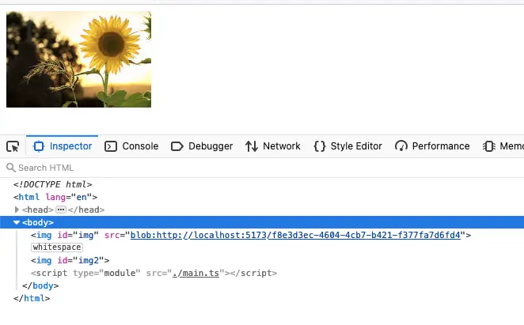

Display Blob as Image
接口返回的是图片的二进制，一个 Blob 对象。用 <img> 展示时，需要将返回的 Blob 转换成一个 URL，才可以放到 img 的 src 使用。
URL.createObjectURL()
使用 URL.createObjectURL() 可以将返回的 Blob 转换成一个 URL。
const imageURL = "https://encrypted-tbn0.gstatic.com/images?q=tbn:ANd9GcSw0gWlEimLsPylCKAm95y1K27fCdzXEHGhXYTfEWXo&s"
fetch(imageURL).then((res) => {
return res.blob()
}).then((blob) => {
const imageObjectURL = URL.createObjectURL(blob);
document.querySelector("#img").src = imageObjectURL
})
需要注意的是每次调用都会生成一个新的 URL，哪怕是同一个图片。当文档 unloaded 时，这些生成的 URL 才会被销毁。为了避免 URL 被大量创建造成内存问题，最好在不需要这些 URL 的时候用 URL.revokeObjectURL() 将 URL 释放。
{kind=link}

FileReader.readAsDataURL()
另一种方法是通过 FileReader 的 API，将返回的 Blob 转换成 Base64 显示。
readAsDataURL方法会读取指定的Blob或File对象。读取操作完成的时候，readyState会变成已完成DONE，并触发loadend事件，同时 result 属性将包含一个data:URL格式的字符串（base64 编码）以表示所读取文件的内容。
const imageURL = "https://encrypted-tbn0.gstatic.com/images?q=tbn:ANd9GcSw0gWlEimLsPylCKAm95y1K27fCdzXEHGhXYTfEWXo&s"
function blob2Base64(blob) {
const reader = new FileReader();
reader.readAsDataURL(blob);
return new Promise((resolve) => {
reader.onloadend = () => {
resolve(reader.result)
};
})
}
fetch(imageURL).then((res) => {
return res.blob()
}).then(async (blob) => {
document.querySelector("#img").src = await blob2Base64(blob)
})
{kind=link}